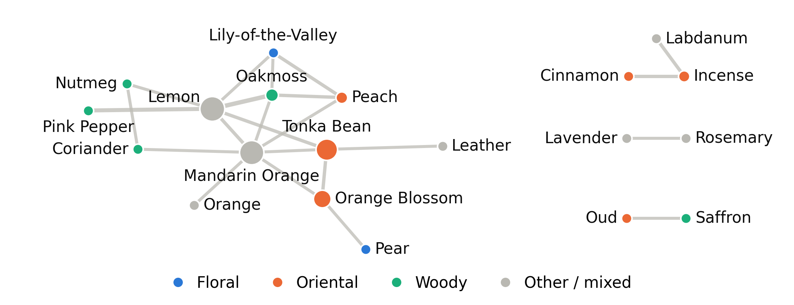

MADT 7202 Mid-Term · Palaloy · Code & notebook: @@REPO@@
Palaloy, as ScentSelf founder, picks up to 3 anchor notes for the debut concept before the next IS tester round. A note qualifies only if it is a stable bridge more central than its popularity predicts; if none passes, Lemon is kept only as the control anchor, not as the positioning claim.
A frequency table shows which notes are common, not which sit between separate note groups. “Bridge vs. merely popular” is a question about paths: it needs the co-occurrence graph (betweenness vs. frequency rank).
| Source | Fragrantica pages, ScentSelf list: 216 items − 3 brand-site − 7 duplicates (same page) + 3 other releases of listed names = 209 |
|---|---|
| How | Selenium; pages parsed offline; field: Fragrance Notes (All) |
| Why one source | One source keeps one note taxonomy and family labelling for all perfumes; brand pages were excluded (non-standard naming). |
| Legal basis | None granted. ToS §5.3 (version of 14 Jan 2026) bars automated access without written permission; none requested. Coursework only; raw data not republished. |
| Period | Before Oct 2026; votes added 7–12 Oct (unused) |
| Volume | 209 perfumes, 356 notes. Robustness: 1,780 perfumes (list + search by-catch) |
| Node | Cleaned fragrance note |
|---|---|
| Edge | Two notes listed in the same perfume |
| Weight | Perfumes sharing the pair (raw count); NPMI as check |
| Pruning | Drop generic notes in ≥20% of perfumes (10, e.g. Bergamot, Vetiver, Cedar) before ranking; keep notes in ≥5 perfumes (89) and edges ≥6 perfumes (set by a fixed density rule, 0.12) |
| Final | 20 nodes, 23 edges (13-note core + 3 small clusters) |

Node size = betweenness; colour = note’s dominant scent family; line width = perfumes sharing the pair.
A non-generic note in the top 10 in ≥80% of resamples with a ≥5-rank gap on a larger catalogue. Sensitive to the cutoff (at 8, only Lemon has betweenness >0) and generic cut (at 25%, Cedar and Vetiver return as top bridges, gap 0). Families uneven (Floral 61, Leather 4).